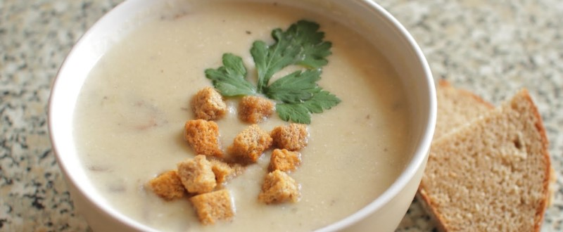

Суп-пюре из шампиньонов

400 гр. шампиньонов обжарить с 1 луковицей. 5 картофелин отварить, воду не сливать. Смешать грибы, картофель с жидкостью, 1 зубчик чеснока, 250 мл. молока и 50 гр. сливочного масла в блендере. Подавать с сухариками из белого хлеба.